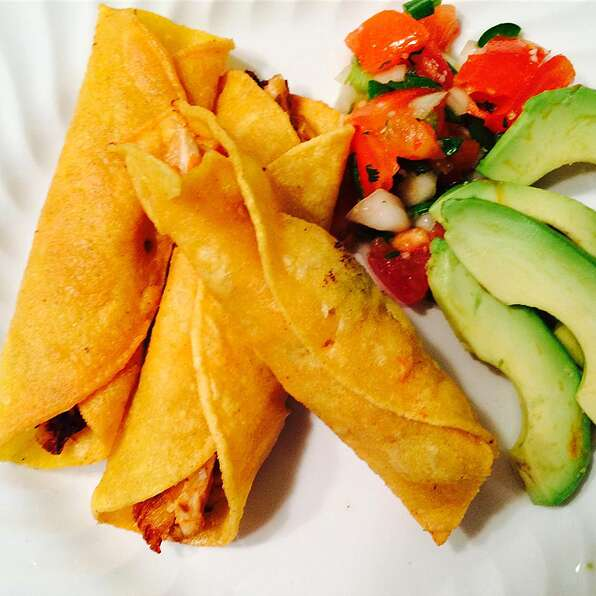

Great Chicken Taquitos

Description
These Taquitos work just as easily as an appetizer or an entree!
For something the entire family or party will enjoy give these a try!
Ingredients:
- 1 cup water
- 1 pound skinless, boneless chicken breast halves
- 3.5 cups vegetable oil (such as Crisco®), divided
- 1 cup finely chopped tomatoes
- .5 cup minced green onions
- 6 tablespoons chicken broth
- 2 teaspoons all-purpose flour
- 1 teaspoon minced garlic
- .5 teaspoon ground cumin
- .5 teaspoon dried oregano
- .5 teaspoon chili powder
- .5 teaspoon salt
- 12 (6 inch) corn tortillas
- 12 wooden picks
- 1 cup shredded lettuce, or to taste
- .25 cup guacamole, or to taste
Steps:
- Bring water to a simmer in a skillet over medium heat; add chicken. Cover skillet and cook until chicken is no longer pink in the center, 20 to 25 minutes. An instant-read thermometer inserted into the center should read at least 165 degrees F (74 degrees C). Remove chicken from water and cool; shred with a fork.
- Heat 1 tablespoon vegetable oil in a skillet over medium heat; cook and stir chicken, tomatoes, green onions, chicken broth, flour, garlic, cumin, oregano, chili powder, and salt until heated through, 3 to 5 minutes.
- Heat remaining vegetable oil in a heavy 10-inch skillet over medium heat; carefully dip tortillas in the hot oil to soften, about 1 minute. Remove tortillas with tongs and drain on paper towels, reserving oil. Heat oil to 375 degrees F (190 degrees C).
- Spoon about 2 tablespoons chicken mixture down the center of each tortilla. Tightly roll each tortilla around the filling and secure with a wooden toothpick.
- Fry rolled-up tortillas, working in batches, in hot oil until golden brown, 3 to 5 minutes. Remove taquitos with a slotted spoon and drain on paper towels. Serve taquitos on a bed of shredded lettuce with guacamole on the side.